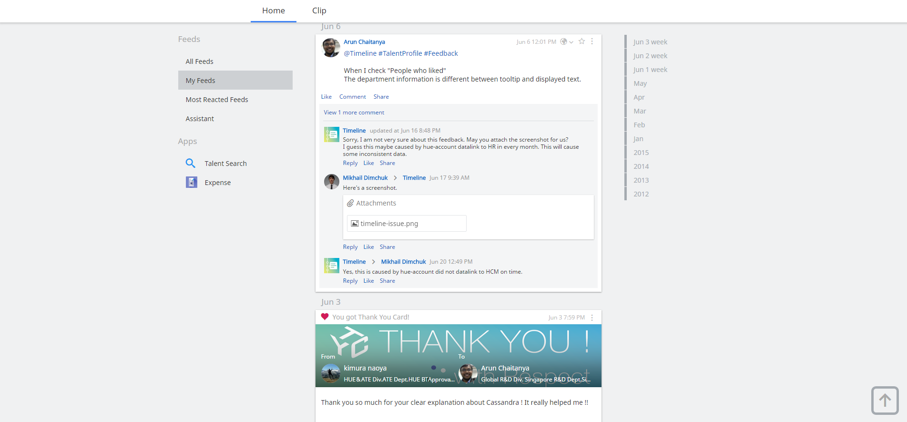

Cassandra
How to use it in ERP
Talk by Miriappalli Arun Chaitanya / @chaitan64arun
About me
- From INDIA
- 4 years of professional experience
- Microsoft
- Works Applications
- 2 years in Singapore
- Transferred to Tokyo last year
- Working on Cassandra for past 18 months
Why did I transfer ?
- Multi cultural environment. In Singapore, my team has people from 4 countries.
- Multi lingual environment. In Japan, my team has two Japanese member and others are global member.
Outline
- History of Cassandra usage in Works Applications
- Best use case for Cassandra.
- Popular use case of Cassandra in "AI Works".
- Complex ERP requirements and where Cassandra faces trouble.
- Customized Cassandra to solve such issues.
- Are there any better alternatives than Cassandra ?
History
Cassandra is first used in Macky! - a web mail product.

2010
- Using HBase 0.20 at first
- Change to Cassandra 0.6 with Hector 0.6 for stability
- Choose ByteOrderedPartitioner
- Deployed first production cluster with 3 medium instances on AWS (because there are no practice... We changed them larger later.)
- We tried to use lucandra at first, but failed because it's so buggy...
- April, 2010
- 150GB volume
- three c1.medium instances
- 181$/month on AWS
2011
- Macky!1 use Hector Driver
-
Oct., 2011
- 13,000GB volume
- 18 m1.large instances
- 7,326$/month on AWS
2013
- Macky!2 deploy the first production Cassandra cluster with 6 nodes
- Cassandra version 1.1
- Solr cluster introduced with 3 nodes
- Solr version 4.1
2014
- Macky!1 data migrated to Macky!2
- Cassandra cluster with 33 nodes
- Cassandra version 1.2
- Solr Cluster with 18 nodes
- Solr version 4.7
- HUE KVA with Netflix astyanax
2015
- HUE KVA with Datastax Java Driver
Now
- Cassandra cluster with 34 nodes
- Solr Cluster with 32 nodes
- Cassandra data 10TB
- Solr index data 185GB
Why Cassandra?
time-ordered, durable, idempotent, distributed data store
- There is no silver bullet for all use cases.
- RDBMS has evolved to solve last generation problems to store data and retrieve data according to our queries.
- It is primarily targeted for banking applications where data consistency, durability is of atmost importance.
- Scalability and fault tolerance is a problem. Sharding is difficult.
What is Cassandra capable of ?
- Elastic : Horizontal Scaling
- Fault Tolerant: 100% Uptime
- Decentralized : Peer - peer datacenters
- Online Transactional Data (Not only for dataware-housing)
- unlike HBase
- Tunable Consistency
AI Works
- Company definition
- An outstanding product ready to change the ERP world with it's high speed, high usability, inbuilt intelligence.
- My definition
- A product that will make us extremely LAZY!
Where we use Cassandra
TLDR, Everywhere as primary datastore.
- Timeline
- Talk
- Enterprise Spreadsheet
Timeline
Talk

ESS
Common Points
- High Velocity Data
- Consistency - Not high importance
- Need high availability
- Need elasticity when data, users increase - eg: NEW YEAR
Complex ERP requirements
- Require OLAP functions - filter, group, aggregrate
- Need ACID properties
- Large number of tables
- Highly RELATED data
JVM based
Can only support about 500 tables on small commodity hardware.
Our system needs about 40000 tables.
Solution: We implemented Multi-Tenant system and increased the number of clusters.
Customized Cassandra
- Multi-Tenant:
- Store all customer data in a single installation.
- Multi-Cluster:
- More than one cluster to support tables.
Now, although single product installation will require more cost, the cost is shared between customers to an extent.
Tenant ID as first partition key
CREATE TABLE ac_expense_airport_copy1 (
tenant_id text,
iata_code text,
airport_name blob,
country_code text,
icao_code text,
latitude decimal,
longitude decimal,
region_code text,
region_name blob,
PRIMARY KEY (( tenant_id, iata_code ))
)
Custom Compaction Strategy
SSTables are written in partionkey order.
We changed it to make it Tenant-Aware.
- SStables will be written per tenant
- Faster reads and slower Compactions
Custom Security Pattern
All customers data is stored in the same table.
We changed it to make it Tenant-Aware.
- SStables will be written per tenant
- Faster reads and slower Compactions
Weak Index System and filter
- Filter is very restricted.
- No group-by, No aggregations
- No like search
Solution: Custom Index system using Kafka and ElasticSearch.
Talent Search
Like Search and indexing.
Alternatives ?
- Why NoSQL:
- MongoDB : schema-less document store.
- HBase : Datawarehousing use - Log Analysis
(Scanning huge, two-dimensional join-less tables is a requirement) - Redis : In-Memory search for varieties of data structures like tree, queue, link list etc -
good fit for making real time leaderboard - Cassandra
- Write Heavy applications with responsive reporting system. (Facebook generates 10TB compressed data /day)
- NoSQL database (Scalability - Not a document, Graph, BigTable)
- No ACID properties (not suitable for Financial data)
Common Problems
- Wrong Schema design and wrong access pattern
- Read-time Degradation
- SLOW NODES CAN RESULT IN BRINGING DOWN THE CLUSTER
- FAILED OPERATIONS
- HIGH FREQUENCY OF READ ROUND TRIPS
- Need deep knowledge to work with
- No or Less capability of OLAP systems - group, filter or aggregrate.